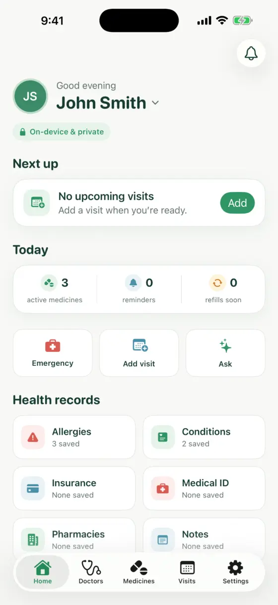
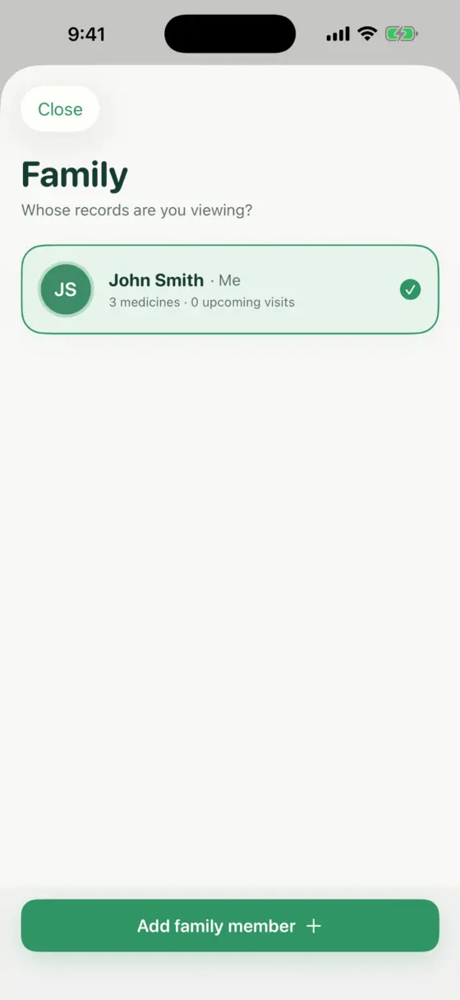
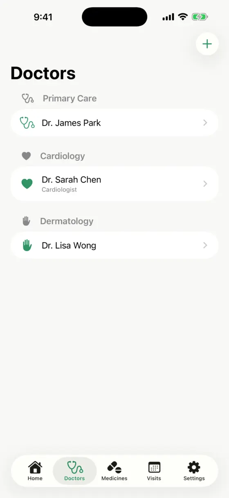
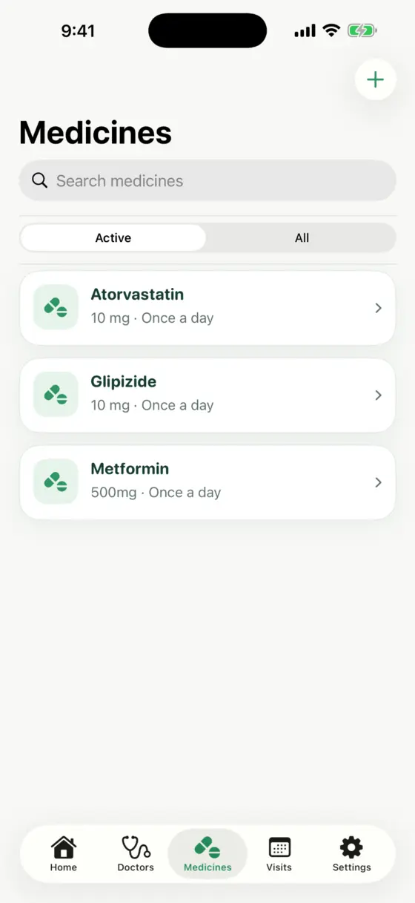
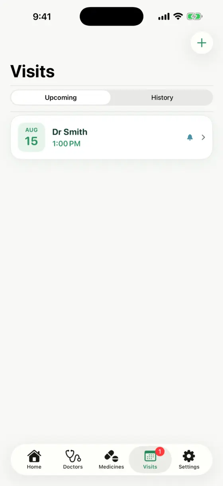
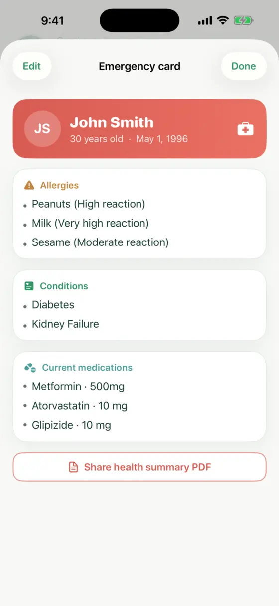
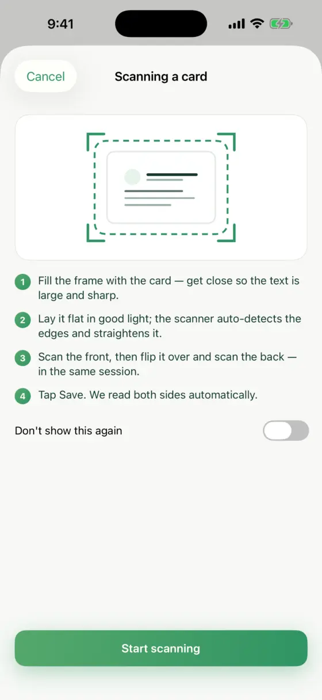
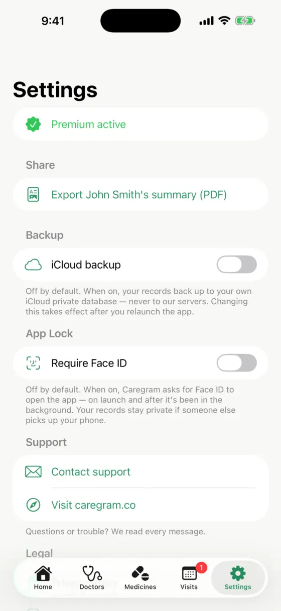

Home
On-device & private
Every record.
Every record.
One calm place.
Caregram keeps your family's medicines, doctors, visits, allergies, cards, and emergency details organized—privately on your iPhone and ready even without a signal.
No account required
Works offline
Optional private iCloud backup
Private by designYour data stays yours

Ready when neededEmergency details in one tap
FamilySeparate profiles
MedicinesDosages & refills
VisitsPlans & reminders
EmergencyCritical details
Inside CaregramDesigned to feel clear,
Designed to feel clear,
even when life is not.
Move through your family's health information without digging through folders, camera rolls, or scattered notes.
Family
Care for everyone

Doctors
Every provider, organized

Medicines
Your medicine list, simplified

Visits
Never miss what is next

Emergency
Critical details in seconds

Scanner
Scan cards and bottles

Privacy
Your records stay yours

Swipe or scroll to explore the app
Simple from the start
Set up in minutes, not afternoons.
Use the information you already have. Caregram helps you turn it into a private, useful family health record.
Scan or add
Scan a supported card or medicine label, speak a list, or enter details yourself.
Review with confidence
Check the information before saving so you stay in control of every record.
Use it when needed
Find an emergency card, prepare for a visit, or share a summary PDF in moments.
All together now
The essentials for everyday family care.
Enough structure to keep details useful, with an interface that stays human and approachable.
See how privacy worksFamily profiles
Keep separate, easy-to-switch records for yourself, children, parents, and anyone you care for.
Medicines & refills
Save dosages, pharmacies, schedules, and refill details in a list that is easy to scan.
Doctors & visits
Organize providers by specialty and keep upcoming visits and important notes close by.
Emergency card
Bring allergies, conditions, medicines, and essential details together when seconds matter.
Smart scanning
Scan supported health cards and medicine labels, then review every detail before saving.
Shareable summary
Export a clean PDF for a new doctor, caregiver, school, or anyone you choose.
Privacy by design
Your family's health information belongs to your family.
Caregram's core records live on your iPhone. There is no Caregram account to create, no advertising profile, and no Caregram server holding your health records.
Read our plain-language privacy policyOn-device by defaultYour records stay on your iPhone.
Useful without a signalCore features remain available offline.
Your iCloud, your choiceOptional backup goes to your private iCloud database.
Face ID protectionAdd another layer of privacy when you want it.
Pricing
Start simply. Grow when you need to.
Use Caregram free, then unlock unlimited organization, scanning, and private backup with Premium.
A clear place to begin
Build useful records for your family and keep critical details close.
- ✓ Up to 3 family profiles
- ✓ Doctors, medicines, visits, and notes
- ✓ Emergency card and PDF sharing
- ✓ 5 card and bottle scans
Unlimited organization
For families who want more records, more scanning, and peace of mind.
- ✓ Unlimited family profiles
- ✓ Unlimited doctors and medicines
- ✓ Unlimited supported scanning
- ✓ Optional private iCloud backup
Subscription options and current regional pricing are shown in the App Store and inside Caregram.
Care with less clutterYour family's health,
Download on theApp Store